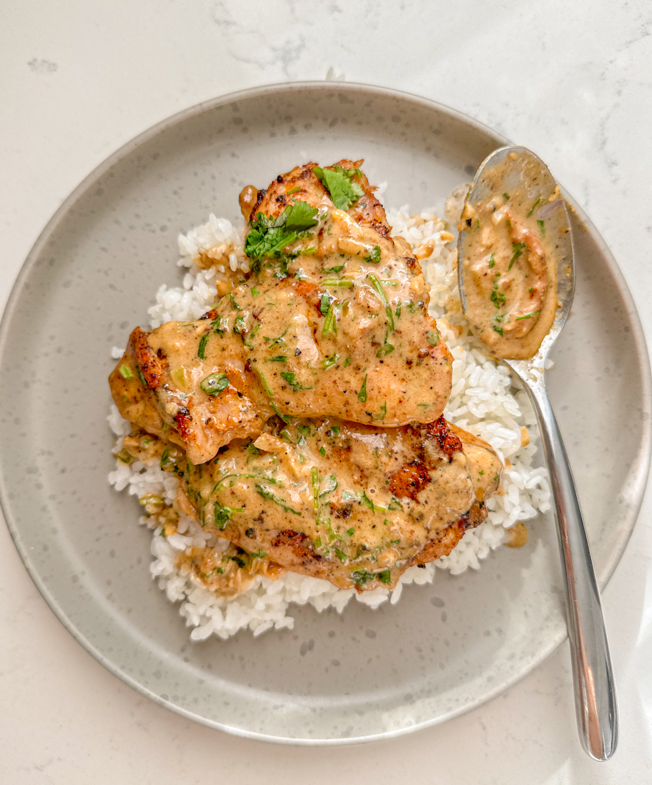

Creamy Garlic Chicken

Description
This dish features tender, pan-seared chicken breasts smothered in a luscious, garlic-infused sauce. Not only is it incredibly flavorful, but it’s also simple to prepare, making it perfect for a quick weeknight meal. Garlic is the star of the show for this dish, so we’re using lots of it! I love to spoon the garlic over the chicken along with the creamy sauce right before serving.
Ingredients
- Large boneless skinless chicken thigh
- Salt & pepper to taste
- Flour for dredging
- 1 tablespoon olive oil
- 2 tablespoons butter divided
- 1 whole head garlic cloves peeled
- 1/2 cup chicken broth or stock
- 1/2 teaspoon lemon juice
- 1/4 teaspoon garlic powder
- 1 cup heavy/whipping cream
- Parsley chopped (optional)
Instructions
- Cut the chicken in half lengthwise so you have 4 smaller cutlets. Generously season them with salt & pepper and coat them in the flour.
- Add the olive oil and 1 tbsp of the butter to a skillet over medium-high heat. Once the pan is hot, sauté the chicken for 4-5 minutes/side or until it’s nice and golden. Take the chicken out of the pan and set it aside.
- Reduce the heat to medium (or even med-low if using cast iron), and add the rest of the butter to the pan. Let it melt and then add the garlic cloves. Cook them for 3-4 minutes, stirring often, until they’re lightly browned on the outside.
- Add the chicken broth, lemon juice, and garlic powder to the pan. Let it bubble for around 4 minutes or until the liquid is noticeably reduced.
- Stir in the cream and add the chicken back into the pan. Let it cook for another 5 minutes or so, until the sauce is reduced and the chicken is cooked through. Serve with freshly chopped parsley if you wish.
Home